Rev. Dr. Rick Hartley
1969–2017
Rev. Dr. Rick Hartley, 48, of Mukwonago, Wisconsin passed away unexpectedly and peacefully on November 10, 2017 during an afternoon nap. He is remembered for his infectious sense of humor, love of family and commitment to his faith. Born in Mountain View, California on September 1, 1969, Rick graduated from Oak Grove High School in San Jose, California in 1987. He attended Biola University for a short time and then joined the drama ministry Covenant Players, touring throughout the U.S. for four years. He met the love of his life, Karla Paradis Hartley, when both were attendants in a wedding and were themselves united in a candlelit celebration on December 27, 1992. Rick loved the Lord, his wife and his three children who were his pride and joy.
Rick was enamored with books, reading and learning and as a result, earned numerous degrees including a Master of Divinity, Doctor of Ministry and a Master of Sacred Theology. His call into the ministry has taken him and his family to Minnesota (twice), New Orleans, Lincoln, Montana and Wisconsin (twice) where he has left a trail of memories with many wonderful friends. He served as Pastor to several congregations over a span of twenty years, as well as instructor, Professor, Provost, and Dean. He loved teaching and took joy in sharing his knowledge with others. He loved caring for God’s people and was a man of wisdom, compassion and love.
Rick is survived by his wife Karla (Paradis) Hartley, sons JD of Los Angeles and Tim of Mukwonago, and daughter Sarah of Mukwonago; his mother Judy (Dick) Castle of Hailey, Idaho, and his father Bud (Maria Valls) Hartley of Portland, Oregon; his brother Jim (Janet) Hartley of Granby, Massachusetts; mother-in-law Grace Paradis of Quincy, Illinois; brother-in-law Kevin Paradis of Wyoming; sister-in-law Karen (Scott) Mikkelson of Quincy, Illinois, and many nieces and nephews.
In lieu of flowers, the family requests that expressions of sympathy take the form of donations to the education fund for his children and may be given to Karla Hartley. Memories are a timeless treasure of the heart. Please share your stories of Rick with the family below.
 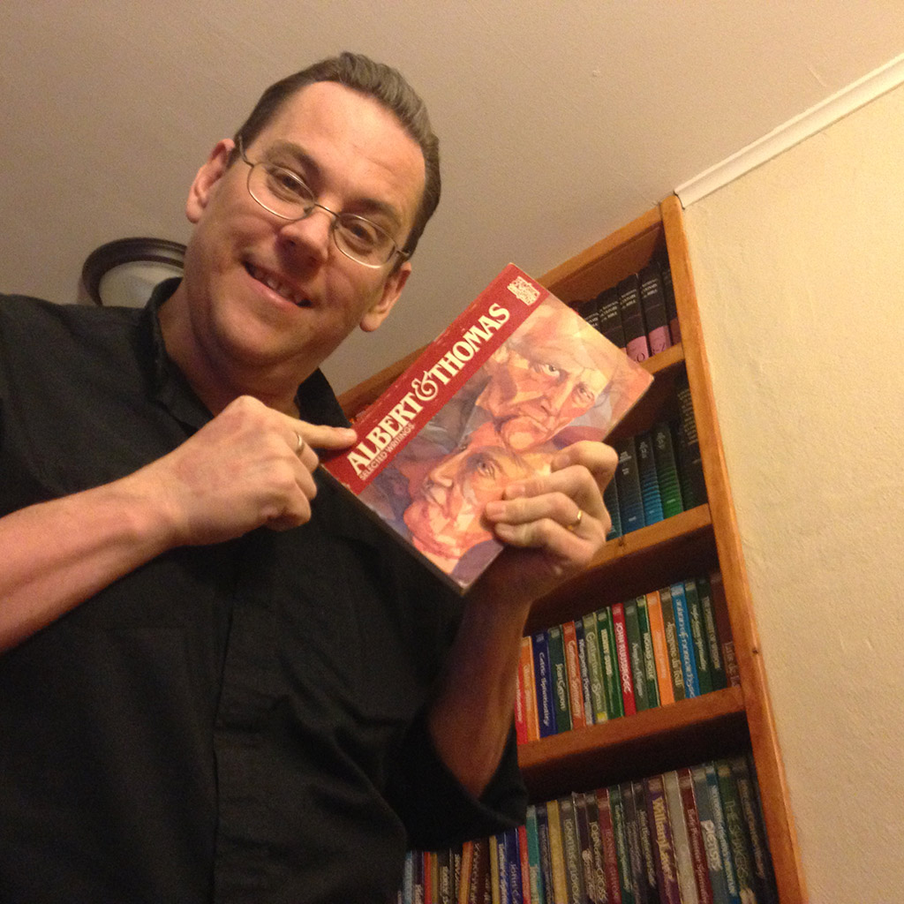
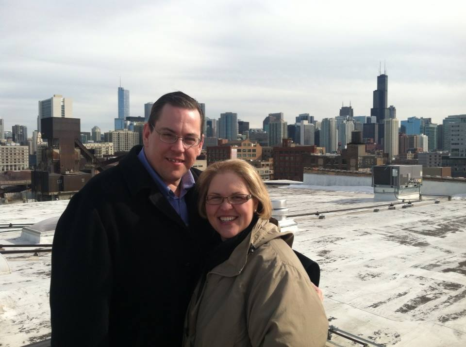
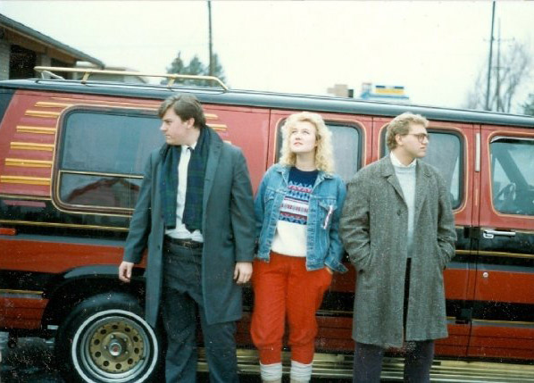
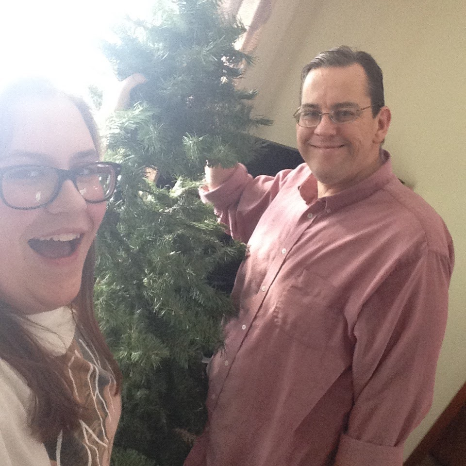
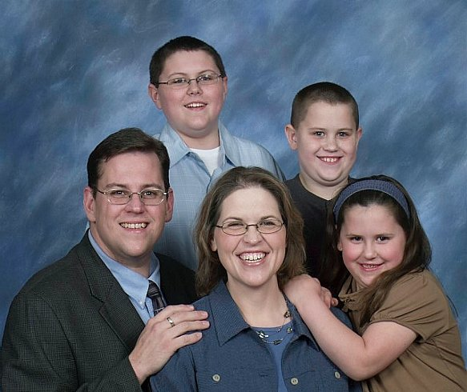
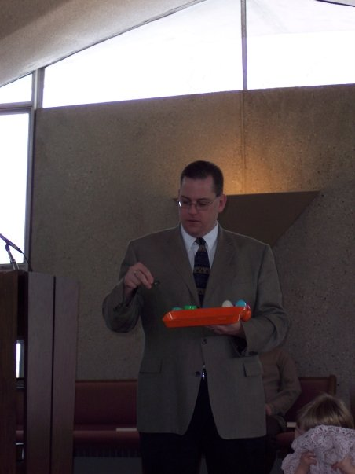
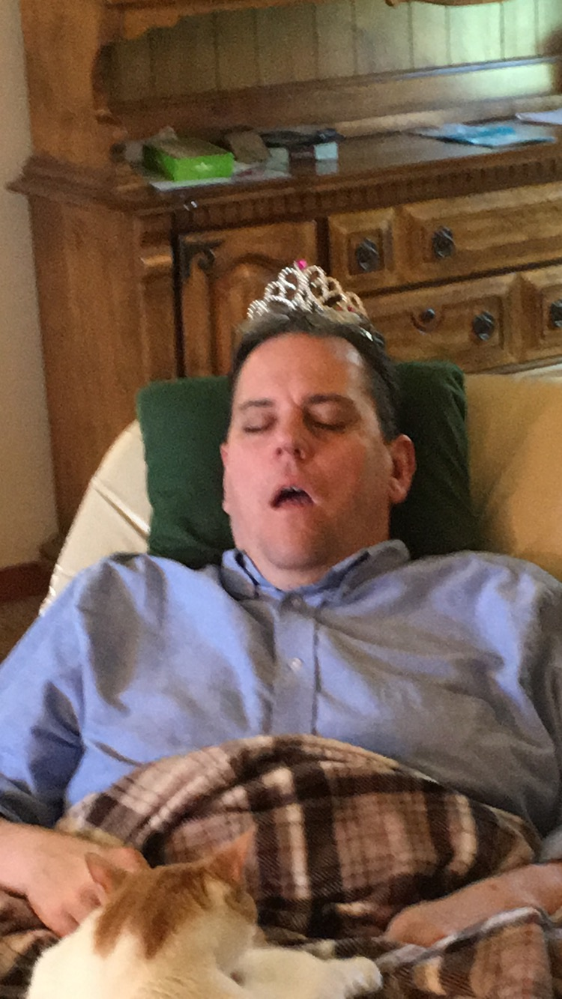
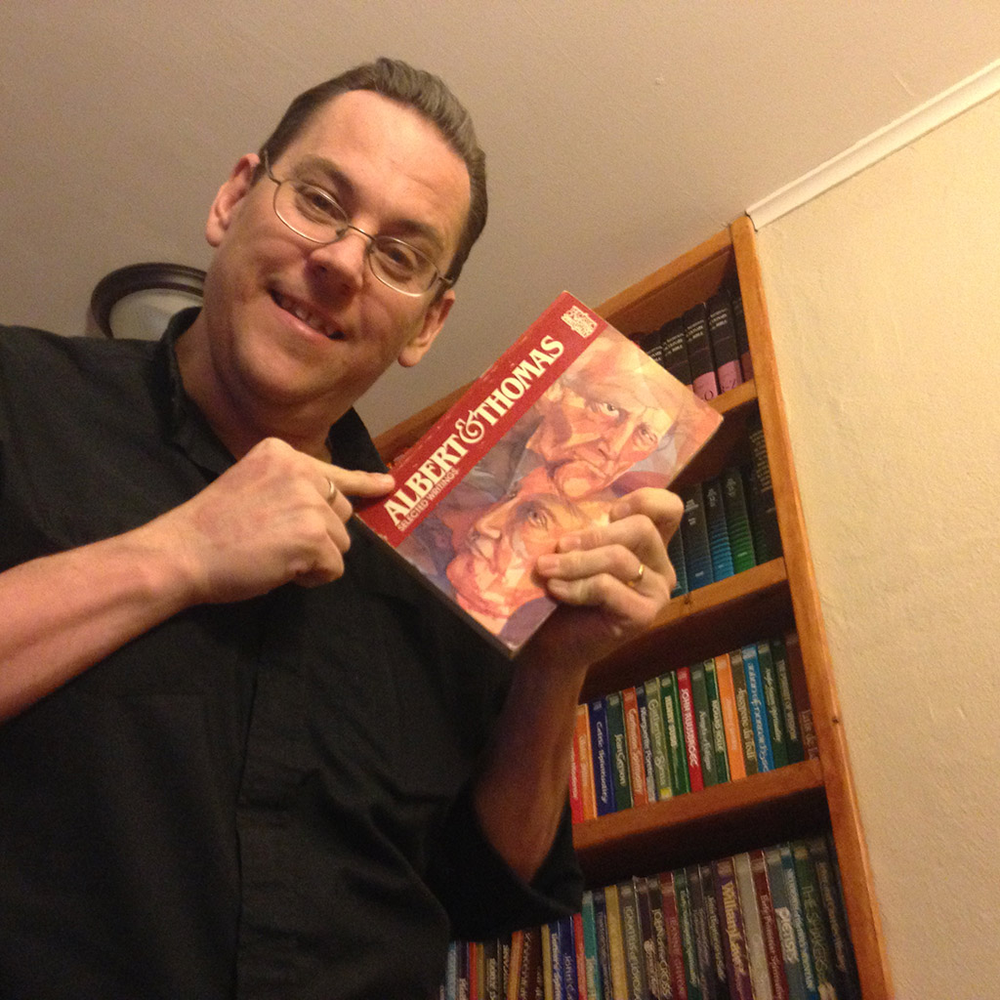
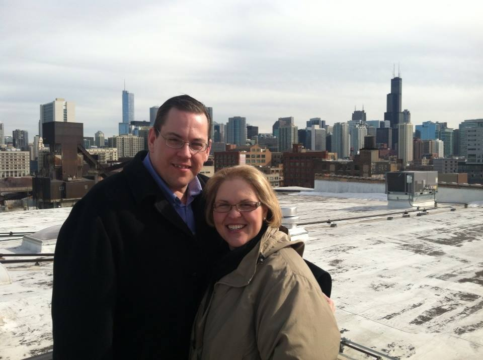
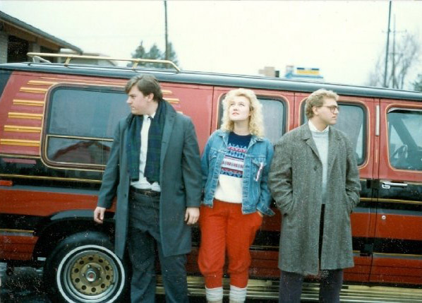
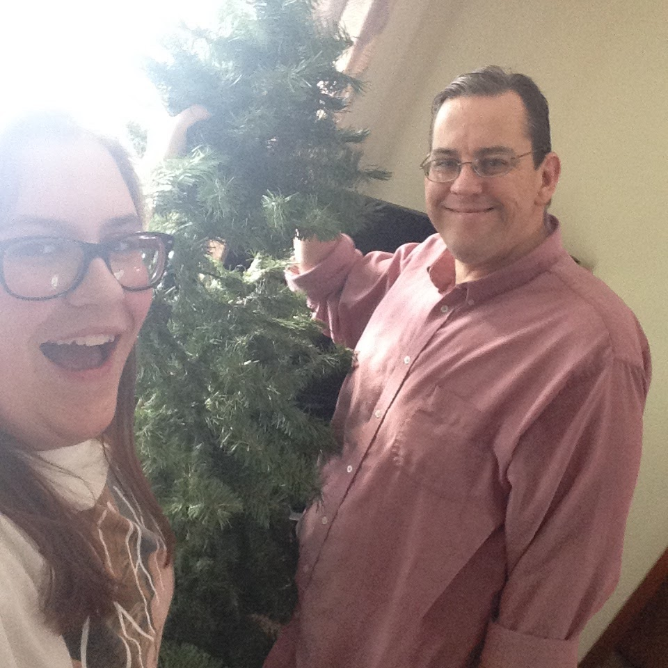
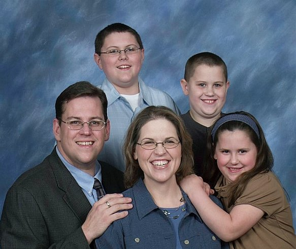
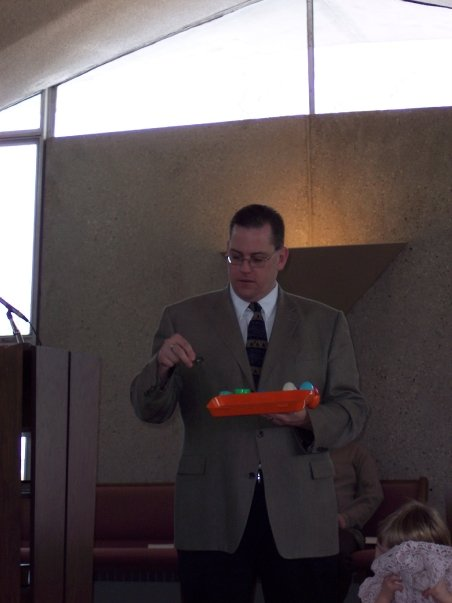
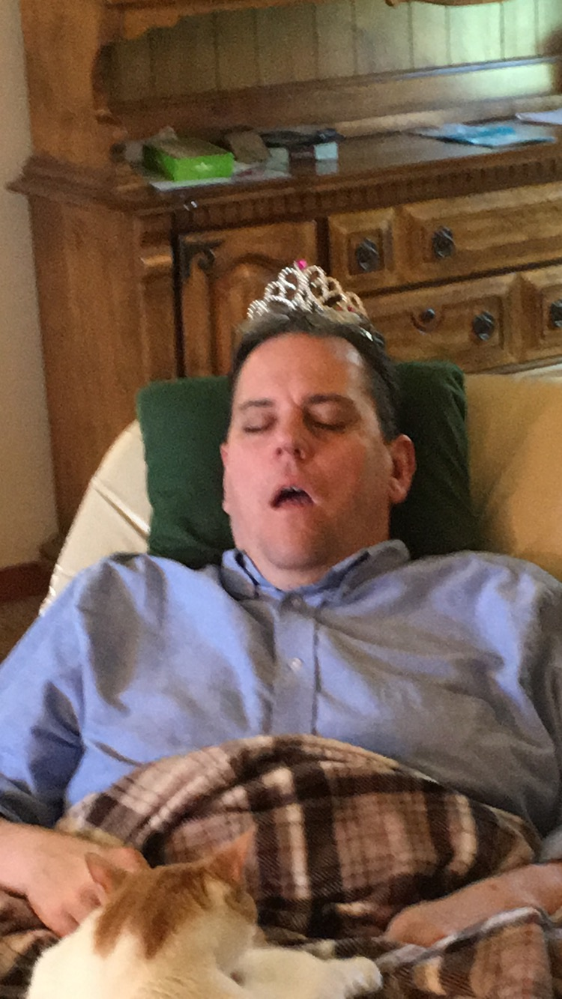